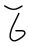
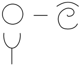

Беседа 3468 от 3877 · Беинса Дуно
Да ценим живота
„Добрата молитва“
„Духът Божи“
За втория път изберете си между четирите фигури: триъгълник, четириъгълник, петоъгълник и шестоъгълник, по една фигура. Всеки да нарисува по една фигура. Някой от вас, ако иска, с ръка да я направи, някой – с линия; както вие намирате за добре. Кой каквато фигура избере, ще се определи. Ако начертаете един четириъгълник, ще се определите какъв сте. Ако начертаете един триъгълник, ще определите какъв сте. Ако начертаете петоъгълник, ще определите какъв сте. Ако начертаете шестоъгълник, както го направите, ще определите какъв сте. Ще му дадете мерки каквито вие намерите за добре: 5 сантиметра, 6 сантиметра.
Сега ще кажете: „Какво ще сполучим?“ Те не са търговски работи. Казва: „Какво ще придобием?“ Като начертаеш един триъгълник, ще определиш пътя си. Ти ако не знаеш как да начертаеш един триъгълник, твоята работа е съвсем забъркана. Ако не можеш с ръка да нарисуваш един четириъгълник, работата ти е съвсем забъркана. Ако можеш, вече успех има работата, иначе работата е забъркана.
Сега всичките хора пеят, но като пеят, все очакват да придобият нещо отвън. То е една голяма спънка. За пример, ние пеем тук, защото [това] е един метод. Човек, който не може да пее, той е съвсем закъсал. Като пее, може да живее. Който не пее, не може да живее, закъсал е, няма никакъв кредит.
Казвам: Пеенето е един Божествен метод за човека. Само човек пее. Дето пеят петлите, то е отглас на човешкото пеене. Петелът кукурига, той не пее. В какво седи пеенето на петела? Какъв тон взема? То е една сянка на пеенето. Кукуригането е една сянка. Пеенето на славея е пеене. То е отглас, сянка е пеенето на славея. В музиката има сенки. Та, казвам: Кога славеят пее? [При] любовта. Работа е пеенето на славеите. Те пеят, когато женската мъти. Тогава мъжкият пее. Щом пеят, излюпват се децата; щом не пее, не се излюпват. Ако не пее, яйцата не се измътват. Докато петелът кукурига, кокошките снасят яйца. Ако кокошките престанат да носят яйца, и петелът няма да кукурига. Понеже някоя кокошка носи яйца, той кукурига. Казва: „Ще се оправи светът.“ Щом има едно яйце в света, петелът кукурига. Казва: „Животът произлиза от яйцето.“
Вие ставате, неразположени сте. Защо? Защото се намирате в едно камилско яйце, майка ви оставила. Тази камилска птица не сяда да го мъти, тя го оставя в пясъка някъде. Вие по някой път не се грижите за вашите мисли. Казвате: „Да става каквото ще.“ Вие вече имате желанието на една камилска птица. Или за някое ваше желание или за някоя ваша постъпка казвате: „Да става каквото ще!“ Така казват камилските птици. Тогава от нея ще се насърчите, че тя оставя тия яйца, не иска да ги мъти. Тя ги оставя на Господа, Той да ги отглежда. Камилските птици, те са най-големите между птиците. Тя е най-голямата птица, най-големи яйца снася. Казва: „Господ да ги отглежда.“ Защо Господ да ги отглежда? Тя е най-голямата, оставила Господ да ѝ отглежда децата. Тя не може да хвърка, бяга като кон, но не може да хвърка. Голяма работа имала! Ако камилската птица хвърка, тя ще направи нещо.
Сега не е въпрос до камилската птица. Всичките форми, които съществуват в света, те са една част от едно цяло. Едва човек има желанието на птиците да хвърка. Те са имали грандиозна идея – да плават из въздуха. Научили се да хвъркат. Те като хората не направиха хвъркането, но за да намират храната си по-лесно, птиците хвъркат и така намират храната си по-лесно. Един орел хвърка, за да види някъде някой заек; хваща го и бяга. Като го види отвисоко, спуща се, хваща го и бяга. Заекът гледа да е близо до гората, защото ако е в полето, много по-лесно го хваща орелът. Като се спусне отгоре, хване го, дигне го нагоре.
Сега, ако ви се зададе такъв един въпрос: Преди колко хиляди години се научиха орлите да дигат зайците? Да кажем, че вие искате да станете доктор по естествените науки. Имате тема научно да изследвате кога орелът се е научил да лови зайци, или преди колко хиляди години птиците се научиха тъй да си правят гнезда и да мътят малките си. Научни данни! Казвате: „Мъчна работа.“ Преди колко хиляди години хората се научиха да си градят къщи? Първоначално къщата е била една колибка, само една врата, през която е минавал. После турил прозорци, които били първо мазгали, докато дойдем до съвременните къщи, които имат доста големи врати.
Ние, съвременните хора, между животните сме замязали на княжески синове. Мислим за себе си, че сме направени по образ и подобие Божие. Но първият човек е направен по образ и подобие Божие. „Направи Бог човека по образ и подобие“, казва. После има друг един човек, направен от пръст и нему Господ в носа вдъхнал дихание и той станал жива душа. Казваме, че човек е направен от пръст. Сегашните хора са от това направени. Туй, дето казваме, че човек е направен от пръст, то е човешката страна на живота. Диханието, което вдъхнал в носа, то е Божественото в човека. Взел малко кал и направил човека – то е човешкото. Взел малко кал и направил човека. Художниците нали правят човек от кал? Колко хора има, направени от кал! Да има някой да тури в носа им дихание, да тръгнат! Сега има автомати, които са направени така, че се движат, поздравляват, донасят ядене. Човек може да се учуди на автомата. Някой човек е мислил.
Сега, някой път вие искате да не страдате. Може ли? Трябва да бъдете автомати. Някои от вас не искате да страдате. Който страда, е вече кандидат да се роди. Страдащите са кандидати да станат хора. Човек, който не страда, той е автомат. И хиляди години има още да живее на Земята. Сега живеенето е както в музиката. То е път за Божествения живот. Човек иска да стане певец, да предава пеене, да му дадат пари, за да изкара прехраната. То е друг въпрос. Пеене, което не носи живот в себе си, то не е пеене. Вие, когато скърбите, скърбите защо? Защото не пеете. Пейте, веднага скръбта ще се превърне в радост. Христос, когато очакваше да го разпънат, учениците му пееха. Преди да излязат навън, пяха. Като хванаха Учителя им, хич не им дойде да пеят. Трябваше да пеят. Войниците като тръгват на бойното поле, пеят. Като пеят, всичко върви. Като не пеят, работата е малко лоша.
Някои от вас ще кажат: „Ние остаряхме вече!“ От какво сте остарели? От работа. Казва: „Аз зная какво нещо е старост“, че „Тази старост“, че „Ние остаряваме от работа.“ Един хамалин от какво остарява? От работа. Орачът от какво остарява? От работа. Майката от какво остарява? От работа. Толкоз деца родила, остарява. Сега някой ще каже, че остарял. Жени, които са се женили и деца раждали, остарели. Но има, които не са се женили – и те остарели. От какво са остарели? Женитбата дал Господ на хората, да свършат една работа заради Него. Хората вече узакониха тази работа. Като се ожени някой, дели, казва: „Тази жена е моя, този мъж е мой.“ Започват да делят децата. Това дете е негово. Някое е на бащата, друго е на майката, на дядото, на бабата.
Сега всинца мязаме на дядо си, на баба си, на майка си, на баща си, но на Господа не мязаме. Има животинска физиономия, хората уподобяват на разни животни: на лъвове, на тигри, на змии, на говеда, на волове, на биволи, на гарга; някой мяза на орел. Англичаните представят бивол – Джон Бул (bull (англ.) – бик; бивол). Русите ги представят мечка. В мечката има двоен характер: тя е месоядец и вегетарианка. Някой път не иска да яде месо – като хване животното, не го яде, ще го хване за врата, ще му тури инжекция, ще изпие кръвта му. Само кръвта изпива. Казва: „Ще ти изпия кръвчицата.“ Значи това е мечи характер. Някой като мечка е бил в миналото, спомня си сега. Казва: „Ще те удуша.“
Казвате: „Нима ние едно време сме били животни?“ Че де е унижението? Всичките животни са създадени по образа на Словото, на разумното Слово. Всяка една форма, която съществува, е създадена и има смисъл. Само че те са изгубили съдържанието.

Езикът най-първо е символистичен. Ако вие пишете символистично, ще знаете всяка буква какъв смисъл има. Тепърва трябва да учите азбуката, да учите всяка буква какъв символ означава. Като произнесеш, като говориш а, тия трептения, които произлизат от първата буква, то е пеене. Ти музикално трябва да произнесеш а. Ако не знаеш какъв тон е а, или о-то, или и-то, или у-то, или е-то… За пример, когато българите искат да кажат, че някой е забогатял, надигнал се е, не иска да се съобщава с другите, как го произнасяте о-то? Казвате: „О-о-о-ооо!“ Музикално го казвате. Значи: „Голям станал.“ Защо казвате само о? Като кажете само „О-о-о-ооо!“, вече знаете. Когато някоя работа не върви, казвате: „Тю!“ Казвате „Тю!“, което е равно на нула. „Тю! Тю!“, значи: „Отишло на нула“. Казва: „Тю, бре-е!“ Сега, някой от вас колко пъти е произнесъл „Тю, бре-е-е!“? Или казвате: „И-и-ии!“ Някои искат да кажат, че много продължила тази работа. Какво означава и в дадения случай?
Имате: И N. Ако средната линия е отдясно или отляво, каква е разликата? Ако отляво започва надясно и слиза надясно, какво означава? Или ако започва отгоре и слиза надясно, какво означава? Ако започва отдолу, е френско. Защо французите са взели този n? На български е р, а на френски същият този знак е n.
Сега, тия неща аз ги навождам. Има фигури, които поясняват нещата. Всички тия неща имат свой произход. Казвам: От тази неразбранщина, която сега съществува, трябва да се извади нещо хубаво, музикално. Да кажем, вие имате музикални книги. Колко мъчно се чете! Може да имаш някое хубаво творение. Колко хубаво може да чете някое музикално творение този, който е свършил музика или който е пял. Вземете една песен – най-първо да видиш с какво се съпровожда. Вземете песента „Фир-фюр-фен“. Тя започва с ре. Какво означава ре? Имате сол. Какво означава сол? След туй иде ла, си. След туй пак слизате на сол, ре. Имате 4⁄4, започва от ла, си, до. След туй слиза на ла, пак ла, си, сол, сол.
Да допуснем, че някой път искаш да ходиш, да намериш пътя на една мисъл. Защото всяка мисъл има свой път, всяко чувство има свой път, всяка постъпка има свой път. Понеже туй, което направиш в даден случай, замязва на направеното в мисловния свят. В мисловния свят е лесна работа, понеже е рядка материята, лесно става. Понеже влиза в духовния свят, в по-гъста материя влиза, става по-мъчно. И най-после направиш нещо на физическото поле.
Казвам: Ако в умствения свят не може да го направиш, в духовния свят ще влезеш в по-големи мъчнотии. Ако и там не може да го направиш, слизаш във физическия свят, съвсем ще загазиш. Мнозина от вас искате да оправите живота си. Вие започвате от най-мъчното. За пример, вие казвате: „Ти вярваш ли в Бога?“ Какво ме интересува една дума, която няма смисъл? „Вярваш ли в Бога?“ И двамата не разбират. Като произнесеш думата Бог, в тебе трябва да стане една промяна, тебе трябва да ти е тъй приятно, както като си гладувал 2–3 дни, че си огладнял и в ума ти изпъква идеята за хубав, топъл хляб и при тази мисъл ти се зарадваш. Или си ожаднял и искаш да пиеш една чаша вода. Като кажат вода, тебе ти трепва радостно сърцето, очите ти се отварят и искаш да пиеш вода. Ти произнесеш думата Бог, после дойдеш да философствуваш, казваш: „Има ли Господ или не?“
Сега ще оставим това, няма какво да ви разправям. Другите хора може да питат има ли Господ или не. Някой е останал сираче, баща му е умрял рано – може да пита има ли баща или не. Или майка му умряла рано – може да пита има ли майка или не. Те имат право да питат. Той не знае баща си – трябва да му разправят, че баща му е жив. Но ти имаш баща и майка – ще питаш ли имаш ли баща или майка? Ще питаш ли дали този е твоят баща или тази е твоята майка? Та, сега аз не зная вие от кои сте. Ако баща ви е умрял или майка ви е умряла, вие сте останали на тяхно място, какво трябва да правите? Две неща трябва да правите: ако баща ти е имал борч, ще започнеш да изплащаш борчовете; ако баща ти е оставил ниви и пари, ще вземеш и ще ги обработваш, ще станеш наследник.
Та, ние в света сме наследници на едно богатство, което ни е дадено. Вие сте дошли на Земята и питате какво може да правите. Най-лесната работа е да пееш – нищо повече! По-лесна работа от пеенето в света няма. Горко ономува, който не пее. Пеене и говор. Ще се научиш да говориш сладко. Като говориш, да те наричат сладкодумен, не да бъде нахохорен гласът ти. Като говориш, да произнасяш думите музикално. Произнесете музикално думата вяра. Всички я произнесете заедно. Ще кажете: „Не сме деца.“ Аз ще стана дете, и вие подир мене.
(Учителят пее „Вяра, вяра.“ Правилен ли е тонът? Какво събуди във вас? Вяра какво означава? На себе си искам да кажа, имам една мъчна работа, не мога да я свърша, казвам си: „Вяра!“ Вяра, която помага, да направя, да свърша тази работа. Или, ти си домакиня, кухарка, как ги наричате, каква дума да турим, най-хубавата дума: домакиня, гостилничарка, готвачка? (Учителят пее
Аз съм домакиня,
която знае добре да готви.
Досега мъжът ми
не ме е бил за лошо готвене.
Казвате: „Детински работи!“ Ако вземеш, че хванеш тенджерата, вземеш лъжицата, счупиш я, по-благородно ли е? Когато готвят тези, които са женени… Ами тези, които не са женени? (Учителят пее
Аз за пръв път се уча да готвя.
Тъй майка ми ме учи да кълцам лук,
глупавия лук.
Аз го кълцам, той люти,
че сълзи излизат от очите ми.
Колко е лют този лук,
колко е лют този лук!
Така пее младата мома. Преди да знаеш, да пееш!
Казвам: Защо някои работи по някой път ни се виждат смешни? Смехът е един контраст. То е едно чувство за успокоение. Смехът действува лечебно на човека. Сега, когато човек изгуби това, хубавото чувство – да бъде весел, той става начумерен. От начумереното всякога болест излиза. Привеждал съм и друг път: в Америка има лекари, които лекуват със смях. Знаеш какво е: идеш при лекаря, заболял те коремът, казваш: „Господин докторе, боли ме коремът.“ Той се смее насреща ти. Казваш: „Какво се смееш, аз умирам!“ Той се смее: „Кис-кис!“ – „Ти се подиграваш с мен!“ Той пак се смее: „Кис-кис!“ 5–10 минути се смее – и ти започваш да се смееш, забравиш, че те боли коремът. След това казва: „Плати!“ Като се смее 10–15 минути, казва: „Плати два долара!“ – „Че как?“ – „Излекувах те, де ти е болката? Ти ще трябва да платиш!“ Та, всеки от вас може да стане доктор. Дойде някоя сестра при вас, заболял я коремът – ще се смееш. (Иванка се смее.)
Това е неразбрана работа. Трябва да знаеш да мислиш. На този човек трябва да въздействуваш на ума. Той е слязъл от височината на своя живот, влязъл в онази гъста материя, мисли, че нещо станало, че има болки в корема. Коремоболието произлиза от една неестествена храна. Образували са се отровни газове. Те имат влияние върху симпатичната нервна система, върху капилярните съдове. Нарушило се малко кръвообращението. Казвам: Този човек, който го боли коремът, тази топлина е събрана на едно място. Когато топлината се разпредели много правилно по цялото тяло, никога не може да стане коремоболие. Или краката са студени, или ръцете са студени – топлината се е съсредоточила в неговия стомах. Или краката са студени – в главата има възпаление. Аз ги наричам тия неестествени състояния, които трябва да се лекуват по един начин.
Най-първо трябва да почне човек с една мисъл, светла мисъл. Всички трябва да изучаваме, да мислим светло. Вярващите казват: „Вяра в Бога!“ Щом вярваш в Бога, ще мислиш, че всичко е разумно направено, макар че не го разбираш. Заболи те коремът – има си причини, причината е във физическото поле, в стомаха. Премахни причината – тази погрешка на физическото поле – и болката ще изчезне. Или болката по някой път може да е в сърцето – причината е в чувствата, в духовния свят. Или може да си неврастеник – причината може да е в умствения свят. Премахнете причините! Сега много мъчно се маха една причина.
Досега толкоз пъти съм говорил за любовта. Искаш да се лекуваш. Аз на вас бих ви дал една медицина, да се лекувате, но само за себе си. Щом човек се усъмни в едно изкуство, може да си причини вреда на себе си. Ще туриш вода, ще я нагорещиш на любовния огън, ще пиеш и веднага ще оздравееш. Сега въпросът е да спазим онова здравословно състояние. (Иванка излезе навън, пак се смее.) Сега вас ви смущава това. Тя остана свободна, че не знае какво да прави. Едно магаре, като седяло 10 години в рудниците, че като го изнесли вън, като видяло Слънцето, започнало да реве и да се търкаля. Радвало се, че се освободило. Тази сестра, тя е свободна сега. Търкаля се, в едно весело състояние е. След няколко дена ще я видите, съвсем се умислила. Да оставим тия работи.
В парните машини, когато се набере много пара, има място, откъдето излиза излишната пара и казва: „пух!“ Парата, която се набира, трябва да излезе, да намери място. По някой път се набира енергия в ноздрите на носа. Имаш едно състояние. По някой път енергията може да се набере в долната част на ухото; може да се набере в горната част на ухото. Някой път тази енергия се набира във веждите. Навсякъде може да се набере. Човек е динамо, пълно с енергия. Тази енергия трябва много добре да се разпредели. Човек има два центъра на енергията: единият център – мозъчният, е динамото, от което излиза енергията, електричеството, което се образува горе. Когато туй електричество намалее, хората нямат достатъчно енергия да мислят, животът им става безсмислен. Щом се набере много енергия, човек става много динамичен. Симпатичната нервна система образува туй разположение – магнетизма. Магнетизмът и електричеството са необходими. Ние може да кажем, че електричеството прилича на житото, което имаш в хамбаря си, а пък магнетизмът мяза на нивата, която трябва да посееш. Житото трябва да извадиш от хамбаря, да го посееш; магнетизмът е условие, да можеш да проявиш живота си.
Та, казвам: В мисловния свят трябва да внесеш онази хубавата мисъл. Най-първо ще туриш, че ще оздравееш, и нищо повече! Щом туриш мисълта, че ще оздравееш, тогава лекарят или тези, които искат да ти помагат, могат да ти помогнат. В себе си имаш място къде тази мисъл да се реализира. Щом кажеш така: „Моята работа се свърши“, ти сам създаваш лоши условия за себе си.
Преди време дойде при мене един мой познат, той беше един български генерал. Иде при мене, когато закъсал. Искаше да го изведа из туй положение. Рекох: „Ти се намираш в едно особено положение.“ Казва: „Моята работа е свършена! Дотегнало ми е вече. Нищо не ми трябва.“ Не се мина много и ми съобщиха, че след два месеца заминал за другия свят.
Сега, за пример, вас защо ви е неприятно, когато тази сестра се смее отвън? Защо ви е неприятно? Концентрирайте мисълта си всички и тя ще престане да се смее. Тя е като просяк между добри хора. Дайте ѝ един лев. Не давате нищо. На умрели хора дава ли се? На живите се дава. На умрелите какво се дава? Умрелият трябва да го облечеш хубаво. Като умре човек, ще го занесеш на банята, ще го окъпеш, облечи го хубаво и го прати на екскурзия в другия свят, нищо повече. Умрелият като дойде, казва: „Мене ми трябват пари за път.“ На умрелия не му трябват пари за ядене, но за дрехи му трябват. Тогава да направим аналогията. Един човек, който обръща внимание на дрехите, какъв е? Всеки човек, който търси пари за път, какъв е? Що ти са пари за път? Ще тръгнеш, без пари ще ходиш. После, за оня свят може ли да си вземе някой пари за път? (Смее се вън.) Сега този смях значи: „Не им говорѝ, не те разбират, всички са серсеми. Толкоз ще разберат, колкото аз разбирам.“ Туй значи нейният смях: „Какво ще им говориш?“ Тя сега се смее, иска да ви лекува.
Казва: „Всички са болни, трябва да се смея, те не са се смели.“
Тя сега не се смее музикално. Така не се смее. Я се посмейте музикално! Кой от вас би се посмял музикално? То е много тежко. Трябва да бъдете актьори на сцената. За да пее човек, трябва да се събуди долната част на мозъка. За да бъде човек музикален, за да пее, трябва доста центрове да бъдат събудени. Един тон трябва да има правилна форма. После, тонът трябва да има съдържание вътре. После трябва да има място, широта. После какво направление ще вземе този тон?

За пример, [ако] тази сестра, която се смее, беше разумна, какво щеше да направи? Тя мисли от сутрин до вечер само за себе си. Такъв е нейният характер. Иска да използува труда на другите. За пример, тя знае да свири и не свири. Има си някои неща, които не е надживяла. На нея ѝ липсва мек елемент. По натура се вижда, че е мека, но ни най-малко не е мека. Има мъжки елемент, има грубост, която е скрита в нея. Отвън върви по женска линия, постъпките ѝ са по мъжка. Този смях е по мъжка линия. (Откакто излезе, продължава често да се смее вън.) Защото, когато на един човек му говорят за най-хубавите работи и той се смее, тогава смехът има друго значение. Когато има нещо сериозно, смехът трябва да отстъпи. Смехът е лекуване. Казвам: То е предметно учение. То е една задача. Тя сама излезе из салона.
Аз снощи бях на концерт. Отидох да видя един челист как свири. Тъкмо сядам на балкона, излиза една госпожа, хубаво облечена, кряска. Казвам: „Някой скандал има.“ Тя кряска, взела един тон, пяла една песен, но тя като кряска, дава заповед като генерал. Всички гледат в партера. Дойде един, тя кряска, дойдоха двама ангели, изведоха я вън. Седя и тълкувам причината: дали е влязла, че не си е платила, или е влязла с дълго палто (понеже правилото е да се събличат). Казвам: Коя е причината? Дойдоха, заведоха я вън, но тя кряска като тази сестра. Един креслив глас, като че ли реже. Кряска така, че пет пари не дава. На едногото, като дойде, кряска, но като дойдоха двама, изведоха я вън. Казват: „Тук ред и порядък има, то с кряскане не става.“ Както сега слушате смеха, така слушах крясъка. Като я изведоха из вратата, още дълго се чуваше крясъкът на гласа ѝ. Има си някаква идея. Тя отива там, хората няма да се подчиняват. Има ред и порядък: ще си съблечеш палтото. Ще го съблечеш! „Ама – казва –, аз с палто ще вляза.“ Не може. Ще си съблечеш палтото, ще го дадеш.
Та, казвам: На всички ви обръщам внимание – тя се смее на човешкото. Всички казвате: „Защо го направи, не можеше ли да не го направи?“ В дадения случай мислите ли тъй, както трябва? Вие може да се абстрахирате. Нас не ни интересува тя. Нас ни интересува някой човек по две причини. Когато нито имам да вземам, нито имам да давам, не ме интересува един човек. Щом има да ми дава, интересува ме. Щом аз имам да му давам, пак ме интересува. Каквото и да направи, нас ни интересува. Казвам: Понеже е взел доста капитал, интересува ни. Сега всички се интересувате от нея, защото вложили сте нещо.
Как мислите, може ли да направим да мълчи? След смеха какво иде? Плачът. Можем да изпратим някой млад брат да я набие. Сега да кажа: „Идете двама братя, понатупайте я малко“ – хабене на енергия е. Какво се придобива? Или ще пратим двама братя да я хванат, както снощи я хванаха и я изведоха из залата. Да я изнесат до стражаря, че като се смее, да не достига гласът ѝ. Тук предава своя смях, по въздуха; вашите приематели всичко приемат.
Сега, да дойдем до добрата страна. Тя е много смела. Казва: „Да мислят каквото искат.“ Има си известна идея. И вие, когато имате известна идея, приложете я, макар да е неприятна на другите хора. Приложете си идеята! Хубавата страна е, че е доста смела. Не казва: „Какво ще кажат хората? Ще изгубят уважение към мене.“ Но погрешката е моя, че аз я пущам вътре. Сега, всеки човек има право да се смее 5 минути. Този, нейният смях е извън мярката. Сега вие какво ще решите? За колко събрания да я изключим? Сега ще решим за колко лекции да не идва. Ще ѝ наложим едно наказание, понеже повече от 5 минути се смее. Понеже се смее повече, трябва да я изключим, трябва да я глобим. Няма да се смее. (– „От 4 събрания да се изключи.“) Съгласни ли сте всички? Това не е човешко, не е Божествено, законът трябва да се приложи. Всяка нота, която се вземе, трябва да бъде правилна. Понеже нотата е много дълга, удължи тази нота. Съгласни ли сте от 4 събрания да я изключим? 4 събрания да я няма на Изгрева, не да бъде вън на двора. 4 е ефикасна доза за лекуване. 4 събрания няма да ѝ говорите, никакъв поздрав, нищо. Няма да ѝ се гневите, като я срещнете, няма да ѝ говорите нито една дума. Понеже тя още продължава да се смее, сега двама ангели, ще я хванете, ще ѝ кажете: „Сестра, тук има закон, ще се подчинявате на законите.“ Другите ще мълчите. То не е ваша работа.
Сега вие казвате: „Нека Господ да оправи работите.“ Може Господ да оправи работите. На богатия, който не върши волята Божия, взема му богатството. На здравия, който не върши волята Божия, взема му здравето. На умния, който не върши волята Божия, взема му ума. На добрия, който не върши волята Божия, взема му чувствата. Най-после, като не върши волята Божия, Бог ти взема живота, отнема ти ума и човек умира.
Казвам: В света законът еднакво действува. Има един закон, който действува еднакво – за малките погрешки е малък, за големите е по-голям. Казвам: Ние ще бъдем спокойни. Налагаме едно любовно наказание. Сега нека един брат да излезе и да я изведе навън от Изгрева. Доброволно, който иска. Тия неща са от общ характер. Да допуснем, че държа една лекция за смеха. Тя се смее неестествено. Смехът трябва да бъде естествен. (Учителят пее :
А-а-а, утихна вече смехът!
Нашата сестра потегли своя път
надалече към своята цел.
Дълго време тя се смя,
без да знае защо,
но сега тя ще научи
какво нещо е смехът.
Той е лек за сърцето и ума.
Нашата сестра дълго време се смя, без да вземе правилен тон на смеха. Ето как се поправя една погрешка.
В живота трябва да се използуват всички условия на Земята. Малко моменти има, когато тоновете са хармонични. Сега дайте вие няколко думи, най-силните думи. Да ви изпея една малка песен. Песните да бъдат образ. (Учителят пее :
Едно време аз бях едно малко детенце.
Майка ми ме прати на извора за вода.
Пък там течеше малка рекичка бистра.
Аз поисках да събуя своите хубави обуща,
да си измия мръсните си крачка в рекичката.
Речено-казано, аз го направих.
Събух своите обуща
и веднага краката си вложих
в текущата рекичка.
Всичката кал,
която беше по пръстите ми,
почна да се разлага.
Аз турих своите малки ръчички
и краката си,
измих ги, лъснаха се те, белички,
както майка ми ги беше родила,
както майка ми ме беше родила,
белички крачка,
както на малко детенце.
Така при майка си се върнах
с мити крачка.
Тези песни са малки сюжети. (Учителят пее
Дотегнал ми е този живот,
не може вече да го търпя.
Вие така пеете.
Къде трябва да се махна?
Ах, тази прокуда!
Пари нямам, дрехи нямам,
бос ходя, гологлав, невчесан,
от хората презиран, от хората презиран.
Това вече не може да го търпя.
Всички почнахте да се смеете. Сега класически да пея. (Учителят пее
О, Господи, Боже мой,
голяма е моята скръб,
която е залегнала в моята душа.
Цяла нощ не мога спокойно да спя.
Не мога, Господи,
да призова Твоето име.
Нека, Господи, Боже мой,
да дойде Твоята милост върху мен.
Избави ме, Господи, от това зло,
което руши моя живот.
Избави ме, Господи,
за да Ти служа с радост и веселие!
Казвам: Всичко в света трябва да се използува, от всичко да се изважда поука. Ако има някои работи, които човек с ума си не може да ги направи, да ги направи със сърцето си. Ако със сърцето си не може да ги направи, с ръцете си да ги направи. Постоянно човек трябва да работи в трите свята. Ако в умствения свят не може да работи, да работи в духовния. Ако в духовния свят не може да работи, да работи във физическия. Ако във физическия не може да работи, да работи в умствения. Всякога ние имаме условия в един от трите свята да работим. Правим погрешка: щом не можем умствено да работим, ние не искаме духовно или физически да работим. В един от тия светове трябва да се работи. Или за сърцето, или за ума, или за душата, или за духа.
То са светове, в които трябва постоянно да работим и да се освободим от ежедневните тревоги, които идват. Те не са само до нас. Целият органически свят е подложен на един изпит. То е като училище. Всичките животни, от най-малките, за всички са създадени и добри, и лоши условия, задачи за разрешение. И щурецът има своя задача, и птицата има своя задача. Млекопитающите имат свои задачи. Човек, като почнеш от всички възрасти, има своя задача. Няма човек, който да няма задача за разрешаване в света. Хубостта на живота седи, когато всички задачи, които ни се дават, разрешаваме. Някой път за един ден може да разрешиш една, две, три, четири задачи. Пък някой път не разрешаваме никаква задача, тогава оставяме материал. Щом ги разрешаваме добре, оформява се човешкото тяло.
Сега, коя мисъл остана най-съществена? В природата всички тия знаци, които сме начертали, съществуват. Когато дихателната система е добре развита, ноздрите на носа са големи, тия мускули са развити. Когато тия мускули се сливат с ръба на носа, дишането е слабо. Тогава хората стават нервни. Трябва да бъдат издадени. Когато са издадени, някой път показват нервно състояние. Трябва да се образува една хубава гънка, една хубава гърбавина.
Казвам: Всички с дишането трябва да работите. Всички трябва да се учите да дишате. Защото когато носът изтънява долу или когато изтънява горе, това са две различни състояния. Когато хората са активни, носът става гърбав. Когато хората са песимисти, носът се завърта като на орел. В орлите е завъртян, за да може да къса месото. Правилно е носът да бъде правилен, с малка гърбица. Завъртяните женски носове са пасивни. Ако носът върви като лъжица, приема. В ухото е същото. Долната част на ухото показва дълъг живот. Средната част показва активност. Горната част показва доброта. Горната част показва неговият ум какъв е. Средната част показва какви са дробовете. Това е диагноза. По-добре е тия неща да ги не знаете, защото като ги не знаете, пък тълкувате, ще се изпоплашите. Колкото на човека са [по-]добре развити умствените способности, толкоз е по-добре сформирувано ухото. Колкото по-добре е развито сърцето, толкоз и гънките на ухото са по-добре развити. Всяка гънка означава нещо. В природата няма нищо произволно. Тези, на които долната част на ухото е къса, са фалирали във физическо отношение. Един мъж, на когото ухото е фалирало, трябва да се ожени за една жена, която има дълга долна част на ухото. Ако тя има долу късо ухо, да се не жени за мъж с фалирало ухо. Фалирванията в туй отношение не са здрави. После, ако тя не е умна, трябва да се ожени за по-умен. Може да има […] на главата, но няма капитал. Трябва да му се даде капитал, енергия.
Казвам: Ако тия неща служат за поука, да четем, то е Божествена книга. Ред поколения, деди и прадеди, са вървели по един път. Ще намерите хора, които да ви кредитират. Светът е място, дето добрите ученици всякога се кредитират. Дето и да мине един добър човек по улицата, зарадвайте се! Минете някъде, станете тъжни – някой взел от вас. Като вървите по пътя, вземайте и давайте. Някъде вземате повече, някъде давате повече – имате плюс и минус. Ние сме тогава при един правилен живот. Обмяната трябва да става правилно. Ако правилно мислиш, ако правилно чувствуваш и ако правилно действуваш, дето и да вървиш, хората ще имат правилна обмяна, обмяната ще бъде естествена между хората. Тогава всякога ще бъдеш разположен. Сега, някои хора ни са приятни, някои не ни са приятни, обмяната не е правилна.
Ти не може да дружиш с всички хора. Може да бараш изгасналите въглища, които са изгаснали, но запалените не се барат. Някои хора са изгаснали въглища, някои са запалени въглища. Щом си запален, ще туриш разстояние на половин метър, [щом си изгаснал] – на 5 сантиметра. Всички хора страдаме от пресиленото приближаване. Когато някой ви обича, той се приближава много, но колкото [повече] се приближава, обмяната става неправилно. Не се приближавай до един човек по-близо от ръста му. Ако е 2 метра, на 2 метра стой; ако е 165 см, на 165 см стой надалече. Ако той е един правоверник, със своите ръце стой настрана.
Тия неща вие не ги вземате предвид. Колкото хората са по-надалече, движат се по-бързо, по-добре. Казвам: Всичко в света става. Наблизо когато хората живеят, трябва да бъдат много умни, много добри, много справедливи. Щом искат физическа близост, трябва да бъдат изящни в ума, в сърцето. Щом не са такива – надалече: 1, 2, 3, 4, 10, 15, 20 метра, на един километър, на 10, на 15, на 100 километра. Затова Господ направил света широк. Когато хората не живеят добре на Земята, единия туря на Земята, другия – на Месечината. Казва: „Къде отиде?“ До едно време ти се гневиш; като замине, прощаваш му.
Казвам: Когато призоваваме името Божие, трябва да бъдем готови да изпълним волята Божия. Човек, който не иде под лъчите на Бога всяка сутрин, да те озарява Божият дух… то е естествено положение. Щом има препятствие между теб и Него, имаш едно състояние, казваш: „Господ с мене ли ще се занимава?“ Ти си в Неговото царство. Сутрин като ставаш, ти да Му благодариш. Ти имаш очи – ти да му благодариш, като отвориш очите си. Ти имаш уши – да благодариш. Имаш нос – да благодариш. Тогава започни да работиш с радост. Каквато и да е работа. Любовта осмисля работата.
Мене ми разправяха как е в Германия. Младите моми от градовете отиват в селата и една година прекарват трудова повинност, пишат им писма де са работили. От селата отиват в градовете. Трябва работа. И те вземат писма. Хората се опознават.
Ако ние не можем да влезем в положението на другите, ние трябва да влезем в положението на един червей. Или имаме един заек, или имаме едно дърво, веднага да влезем в положението на едно дърво. То не е така глупаво. Туй растение разбира много хубаво от химия, как мислите? Една ябълка какви хубави сладки плодове дава! Има известно знание. Само че тя учи мълчанието, вечното мълчание. Или говори толкоз тихо, че хората не могат да ги чуят. Дърветата говорят толкоз тихо, че само един светия може да ги чуе, или един адепт. Един шепот имат дърветата. Аз съм правил често опити. Дойда до някое цвете, клюмнало, полея малко вода и след няколко часа освежи се. При цветята като идеш и се отнесеш любовно, зарадва се цветето. Човек всякога да има цветенце, че да му показва какво е състоянието му. Ако ти имаш цветя в саксия и цветята в саксията не боледуват, не съхнат, ти здрав ще бъдеш. Щом започнат цветята да боледуват, щом ти донесат едно цвете и то изсъхне, и ти ще боледуваш. Диагноза е. Трябва да бъдеш силен. Защо трябва да ги пазиш? Да не би друг човек да мине и да изсъхнат. Когато мине друг човек, който боледува, цветята възприемат болестта, не могат да изтърпят. Като минаваш покрай тях, да ги лекуваш, всеки ден да ги обикаляш, цветята си. Тогава ще покаже външната страна какво е състоянието ти вътре.
Цветята са дадени, те упражняват голямо влияние с уханието си на носа. Всичките цветя са дадени да държат носа ни с уханието си в изправно състояние. Затуй трябва да имате по едно цвете, да е нормален. Щом не е нормален носът ти, едно цветенце трябва да имате, или две, три, четири, за да бъде в изправно положение носът ви. После, плодните дървета държат в изправно положение вкуса ви. Цветята държат в изправно положение не само носа ви, но и очите ви, защото всичките тия краски лекуват очите, лекуват носа, лекуват и устата. Цветята, които ние ги имаме, те са предпазителна мярка за ония болести, които ги имаме. Затуй ония, добрите градинари, не боледуват. Който е градинар, той е здрав. Затуй трябва да имате любов към цветята. Та, може да кажем, че всеки човек мяза на едно цветенце, на някое минзухарче, на някое кокиче; може да мяза на някой карамфил, може да мяза на някое плодно дърво.
Та, онова, което Бог е създал, ние трябва да се интересуваме, защото и бъдещият живот Бог го е създал. От всичко онова, и от малкото, което е създал, да се интересуваме. Да се интересуваме от въздуха, да се интересуваме от водата. Водата чудесии върши. Въздухът чудесии върши. Само, когато духне вятърът, казваме: „Много духа днес!“ Ние живеем във въздуха вътре. Онова, малкото, което водата донася, има за какво всеки ден да благодарим. Някой път, когато сте неразположен, вземете един леген, налейте бистра вода, измийте ръцете, измийте лицето, погледнете водата. Като се измиете, тази вода не я хвърляйте на миялника, но тази вода, в която сте измили лицето си, излейте я на чисто място, излейте я на цветята. Вие ще вземете от хубавата вода, ще я излеете на пътя. Не бива. Нечистата вода може, но чистата вода на най-чистото място ще излеете. Чистата вода от лицето на най-чисто място ще излеете. Сега често на мене искат да ми направят миялник. Аз като си мия лицето, не хвърлям водата в миялник. Искат да ми турят миялник и всичката вода от лицето да върви в мръсната кофа. Казва: „Много хубав миялник.“ Не ме интересува. Миялници не ме интересуват. Аз бих желал, като мия лицето си, да ида на някоя чешма. На чисто трябва да се измия. Казват: „Да ти направим миялник.“ Аз не обичам на миялник да си мия лицето. Да си мия паниците на миялник – да.
Във всяко отношение споменавайте името на Бога! Не навсякъде може да произнасяме името Му. Влезеш в една кръчма – не произнасяй името Божие, дръж го свещено! Не говори за Любовта в кръчмата, говори за други работи. Сега ние нямаме свещени работи. Тепърва трябва да отвикнем езика. В кръчмата ще говориш за винце, за ракийца, за коняк.
Казвам: Няма по-голямо изкуство в света да се научи да цени човек живота, който Бог му е дал, да цени живота на младините си, да цени живота си на зрялата възраст и да цени живота на старините си. Казва: „Остарях!“ Но ти в старостта ще научиш тия неща, които в младините си не можеш да научиш. В старините си ти ще научиш това, което искаше да научиш – ти ще научиш смисъла на любовта, да оценяваш любовта. В старини човек започва да оценява. Като млад мисли, че е глупав, в старини мисли: „Де е детинският живот?“ Детето е само в състояние да оцени живота на дядо си. Децата много обичат дядо си, понеже знаят, че дядото е добър и той знае да оценява.
Казвам: Сега вие не се възмущавайте от вашата старост! Среща ме някой и ме пита: „Как мислиш, как ще свърша?“ Няма какво да свършваш, защото като свършваш с училището, хубаво, но като свършиш с живота? Не казвайте, че сте остарели, но казвайте: „Започвам нов живот. Досега вярвах в стария живот, сега започвам да вярвам в новия живот.“ Така се говори. После казва: „На колко си години?“ Ако от 2 години си променил живота си, кажи: „На 2 години съм.“
Някои от вас не да бъдете стари, млади трябва да бъдете, на 2 години, на 1 година, на 3, на 4, на 5. Както ви виждам, едва ли има някой по-стар от 4–5 години. Стари сте, но то е животът на стария живот. От новия живот сте по на 4–5 години, някои – на 1, 2, 3 години деца, вече се готвят за забавачницата. Дълго време ще вземете, докато станете на 33 години. Тогава ще бъдете за бъдеще. Ако си на 5 години на Слънцето… Една година на Слънцето прави наши 20 милиона според едни, а според други – 200 милиона. 5 слънчеви години колко милиона правят? Един милиард. Един милиард, то са хиляда милиона години! Казва: „Петгодишно дете.“ 5 години какво е? Вие сте на 5 години, но съществата са вложили своя капитал във вас. Вие живеете, че те са вложили своя капитал във вас. Очакват от вас за бъдеще, интересуват се от вас.
Господ, Който ни е дал живота, и Той е вложил нещо в нас и очаква от нас. Всяка лоза, която не дава плод, отрязва се. Трябва да дадем плод, не тъй, както мислим. Всеки един от нас, трябва плодовете, които даваме, да ги занесем в небето. Като идете в оня свят, много от вашите плодове се продават, те не се продават, но ще видите много от вашите плодове там. Плодове от градината на еди-кой си брат: круши, ябълки, сливи.
Фигуративно вземам. Една хубава мисъл е отличен плод. Едно хубаво чувство е отличен плод. Всеки един човек специфична мисъл изпраща в оня свят, особена. Няма две мисли в природата, които да са еднакви. Няма две чувства да са еднакви. Няма две постъпки, които да са еднакви. Такова голямо разнообразие има в природата! Ще се зарадвате, като видите вашите плодове. Писанието казва, че делата ни ходят с нас; не само делата, но и мислите ни и желанията ни. Като влезете в другия свят, ще видите себе си и ще се зарадвате. Ще имате положението, което има един градинар, който насадил градина, и ще видите, че всичките дървета дали плод. Ще се зарадвате на лозето, на сливите, на ябълките, на крушите.
От книгата „Неразрешеното“, втори том от шестата година на Общия клас, прочетете лекцията на 37-мата страница: „Прояви на музиката в съзнанието“. Една лекция, която вие сте позабравили.
„Отче наш“
6-а лекция от XXI година
на Общия окултен клас (1941–1942),
държана от Учителя
на 5.ХI.1941 г., сряда, 5 ч. сутринта,
София – Изгрев.